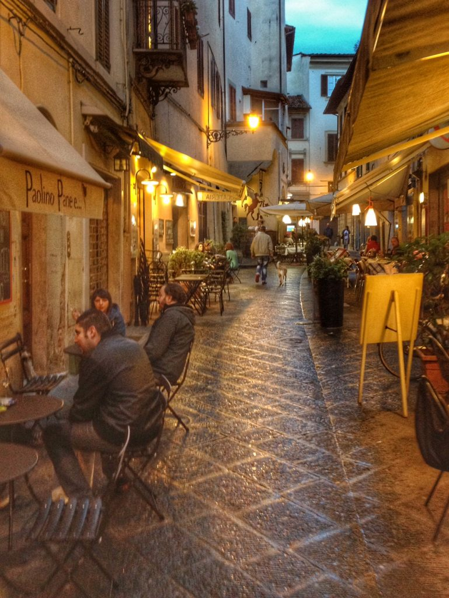

When visiting big Italian cities keep in mind that public restrooms are easier to find near tourist attractions. Most of the time a small fee is required and there is usually an attendant (who expects to be tipped). Either way, always have some change with you. Remember: Uomini means Men, Donne means Women. Besides, by law you have the right to use a bar/coffee house restroom, however many times they allow only customers to use their facilities (sometimes they lock the restroom and you have to ask the bartender for the key). For this reason, it is advisable, and certainly more polite, to get something at the bar before using the toilet. {This is an excerpt from Chapter 15 “Miscellaneous information” of the eBook “Italy from the Inside. A native Italian reveals the secrets of traveling in Italy”}